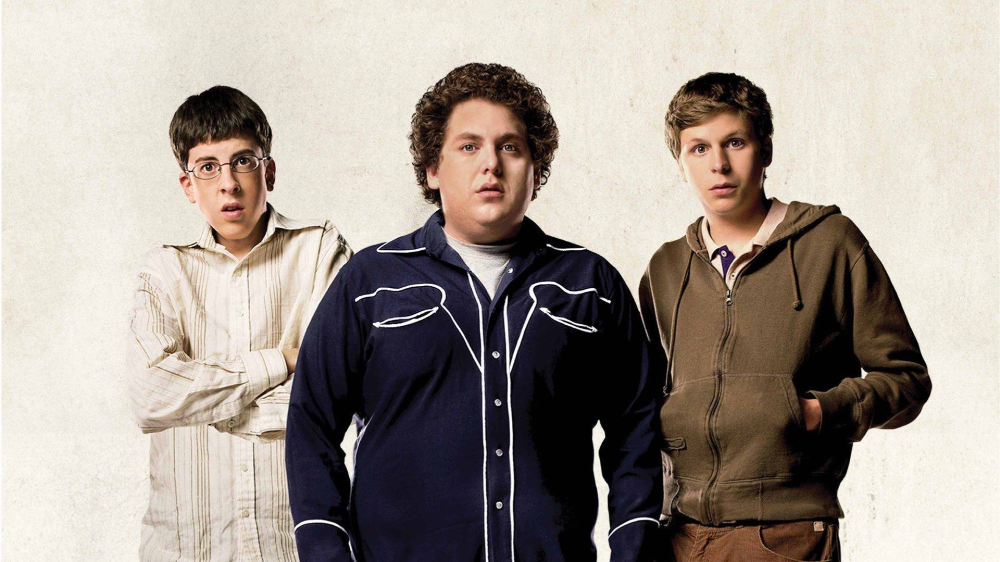
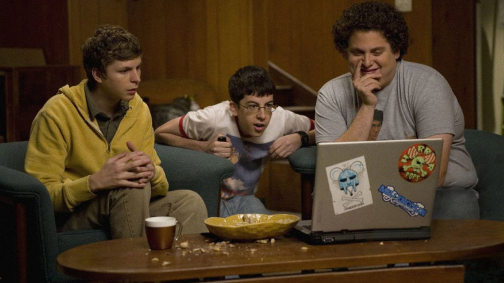
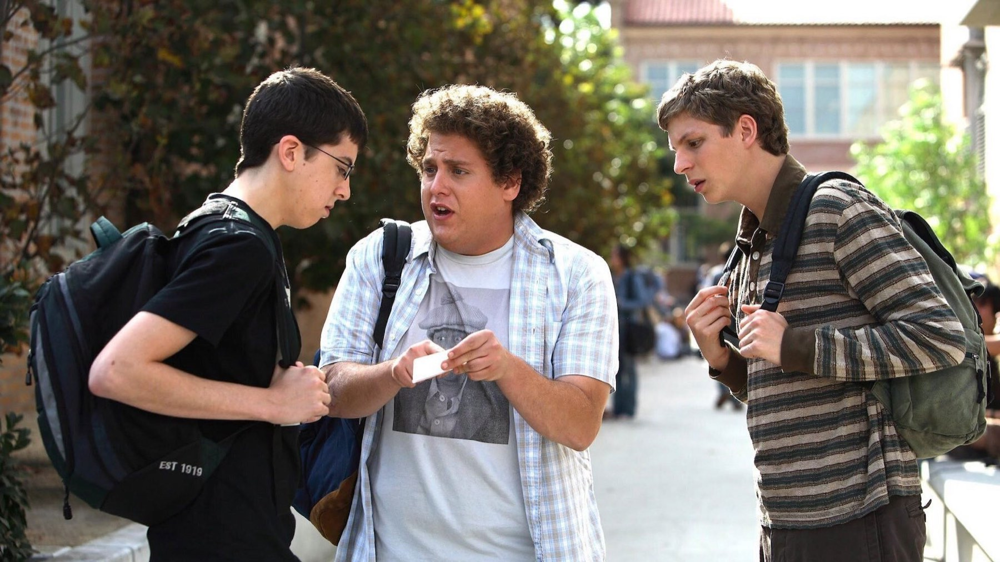

Superbad fu scritto da due tredicenni
Una bozza di due amici, una parte che Rogen non poté recitare e un McLovin ancora minorenne sul set
Due ragazzini di tredici anni, un'idea e una notte di liceo che va storta. Quella bozza non finì in un cassetto: anni dopo diventò una commedia da circa 170 milioni di dollari d'incasso nel mondo, e uno dei suoi personaggi, McLovin, lo conoscono anche quelli che il film non l'hanno mai visto.
Una bozza nata prima del liceo
Seth Rogen ed Evan Goldberg, amici d'infanzia, scrissero la prima bozza di Superbad a tredici anni. Non la abbandonarono, ma la rifinirono per tutto il liceo, partendo dalle esperienze di due ragazzi veri. Il racconto si svolge in una scuola di Vancouver e attinge, in modo libero, alla loro dodicesima classe al Point Grey Secondary School, negli anni Novanta. Per noi è questa la ragione per cui i dialoghi suonano giusti: non li ha messi in fila un adulto che ricorda l'adolescenza, ma due adolescenti che la stavano vivendo. Eppure il film uscì solo nel 2007, perché tra la sceneggiatura finita e il primo ciak passarono parecchi anni.

Il ruolo di Seth che Rogen non poté fare
Il tempo, però, cambiò i piani. Rogen doveva interpretare Seth, il protagonista che spinge l'amico verso la festa, ma intanto era diventato troppo grande per la parte, e anche la sua stazza non aiutava. Il ruolo andò a Jonah Hill. Rogen restò comunque nel film, perché recitò l'agente Michaels, il poliziotto irresponsabile, accanto a Bill Hader nei panni dell'agente Slater. A fianco di Hill c'era Michael Cera, che dà il volto a Evan, l'amico più titubante sul piano di procurarsi l'alcol. Secondo noi lo scambio funzionò, perché Michaels porta in scena proprio l'adulto spensierato che i due ragazzi non vorrebbero diventare. Così l'autore uscì dal ruolo che aveva scritto e finì in un altro, forse più divertente.
McLovin e una patente da venticinque anni
Il personaggio che tutti ricordano è Fogell. Per comprare da bere alla festa si procura una patente falsa, sulla quale cambia il nome in «McLovin», un nome solo, come una star, e dichiara di avere venticinque anni. La parte andò a Christopher Mintz-Plasse, che con questo film esordì sul grande schermo. All'epoca delle riprese aveva diciassette anni, quindi sul set doveva esserci sua madre, come impone la legge per i minorenni, anche durante una scena delicata. Il dettaglio fa sorridere, ma dice molto: il ragazzo che davanti alla cassa finge di avere venticinque anni era ancora un minore. Per questo il personaggio funziona, perché la sua finta sicurezza non nasconde niente, mentre quella dei due amici è tutta da costruire.

Una commedia da 170 milioni di dollari
La prima fu al Grauman's Chinese Theatre il 13 agosto 2007, mentre nelle sale americane arrivò quattro giorni dopo, il 17 agosto. Dietro la macchina da presa c'era Greg Mottola, e l'incasso mondiale toccò circa 170 milioni di dollari a fronte di un budget di circa 20. Da noi uscì con il titolo «Su×bad - Tre menti sopra il pelo», e nel cast figurava anche Emma Stone. Oggi si può noleggiare su Apple TV e su Amazon, al momento della pubblicazione, mentre non risulta incluso in nessun abbonamento. Il nostro consiglio è guardarlo cercando proprio ciò che raccontano queste pagine: la distanza tra i ragazzi che lo scrissero e gli attori che lo recitarono, e quel quarto d'ora in cui Fogell, con la sua patente, si crede più adulto di tutti.
Guardatelo sapendo che nacque sul banco di scuola di due tredicenni e che il Seth previsto non lo recitò mai: ve lo godrete come una commedia scritta dall'interno. A voi la domanda: il McLovin migliore è quello sul documento o quello in mezzo ai poliziotti?
Domande frequenti
Chi scrisse Superbad?
La scrissero Rogen e il suo amico Evan Goldberg, che ne stesero la prima bozza a 13 anni.
Seth Rogen doveva recitare in Superbad?
Sì, nella parte di Seth, ma era troppo grande: la parte andò a Jonah Hill e lui fu un poliziotto.
Quanti anni aveva Christopher Mintz-Plasse sul set?
Diciassette, quindi sua madre doveva essere presente.
Dove si vede Superbad in Italia?
In noleggio su Apple TV e Amazon, al momento della pubblicazione.